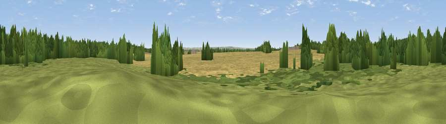

Thornberry Hill
#42987 in England · top 54% of its area beats it · near WimpoleThe view, rendered

A 360° render of this exact spot computed from the terrain model, tree cover and land cover — summer colours, afternoon light, calibrated against photographs of famous viewpoints. Real trees, hedges and buildings will differ in detail.
The panorama
Grey silhouette: terrain skyline in each direction (720 bearings, Earth curvature and refraction included). Dashed green: skyline with trees (+15 m) and buildings (+8 m) as obstacles. Blue strip: how far the ground is visible on each bearing.
Where the view opens
Wedge length = distance to the farthest visible ground on that bearing (vegetation-aware). Rings at 10, 25 and 50 km.
What fills the view
39% cropland · 35% woodland · 26% grassland
Angular shares of the visible panorama (visual magnitude), not map area. Landscape diversity 0.48 (0–1 Shannon).
Key numbers
More beautiful places nearby
The staircase of upgrades: each row has a higher view potential than everything closer. Driving times are estimates from straight-line distance, calibrated against real road routing — check an actual route before setting out.
| Place | Direction | Drive | Score |
|---|---|---|---|
| Lamp Hill | WSW · 1 km | ~3 min | 29.7 |
| Viewpoint near Wimpole | NNW · 1 km | ~4 min | 40.3 |
| Viewpoint near Orwell | ESE · 2 km | ~5 min | 45.6 |
| Viewpoint near Harlton | E · 4 km | ~10 min | 49.6 |
| Viewpoint near Royston | S · 11 km | ~21 min | 56.6 |
| Viewpoint near Hexton | SW · 31 km | ~48 min | 65.4 |
| Viewpoint near Church End | SW · 46 km | ~66 min | 65.8 |
| Beacon Hill | SW · 52 km | ~73 min | 74.1 |
52.14155, -0.03091 · source: osm peak · position refined by local search. Computed location — check access rights before visiting.